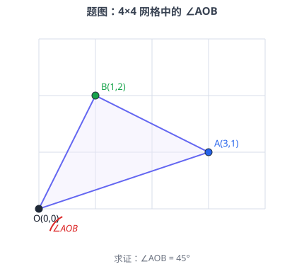
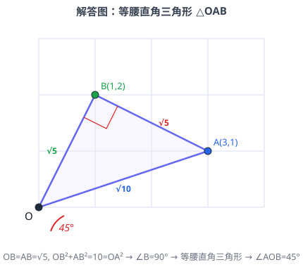

p3a2 网格中证明∠AOB=45°
证明
网格几何勾股定理勾股定理逆定理等腰直角三角形
★★★☆
在 4×4 网格中，∠AOB 的顶点 O 在格点上，OA、OB 分别经过格点 (3,1)、(1,2)，求证：∠AOB=45∘。

🔍 点击查看原图
📌 知识点总结（点击展开／收起）
📌 知识点总结
| 知识点 | 说明 |
|---|
| 网格几何 | 格点三角形的边长可用勾股定理计算 |
| 勾股定理 | 直角三角形：a2+b2=c2 |
| 勾股定理逆定理 | 若 a2+b2=c2，则该三角形是直角三角形 |
| 等腰直角三角形 | 两腰相等的直角三角形，底角为 45∘ |
| 坐标距离公式 | 两点 P(x1,y1)、Q(x2,y2) 间距离 =(x2−x1)2+(y2−y1)2 |
✍️ 解题过程
第一步：设定坐标系
设顶点 O 在网格原点 (0,0)。根据题意：
A(3,1),B(1,2)
即 OA 经过格点 (3,1)，OB 经过格点 (1,2)。所以 ∠AOB 就是向量 OA 与 OB 之间的夹角。
第二步：计算三边长
由勾股定理（坐标距离公式）：
OA=32+12=9+1=10
OB=12+22=1+4=5
AB=(3−1)2+(1−2)2=22+12=4+1=5

🔍 点击查看原图
💡 图中标注了三边长 OA=10、OB=5、AB=5，并在 B 处标出直角符号，在 O 处标出 45∘ 弧。
第三步：发现等腰关系
比较三边：
所以 OB=AB=5（两腰相等），OA 为最长边（斜边候选）。
第四步：用勾股定理逆定理证明直角
检验是否满足 OB2+AB2=OA2：
OB2+AB2=5+5=10=OA2
因为 OB2+AB2=OA2，根据勾股定理逆定理，△OAB 是直角三角形，且直角在 ∠OBA 的对边 OA 所对的顶点——即 ∠B=90∘。
第五步：求 ∠AOB
因为 △OAB 既是等腰三角形（OB=AB）又是直角三角形（∠B=90∘），所以它是等腰直角三角形。
等腰直角三角形的两个锐角相等，且和为 90∘，因此每个锐角为：
∠AOB=∠OAB=290∘=45∘
✅ 证毕：∠AOB=45∘